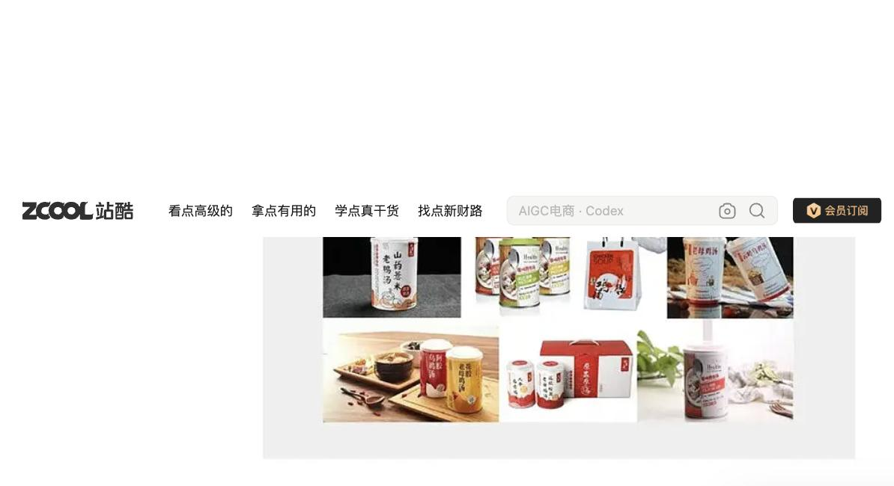
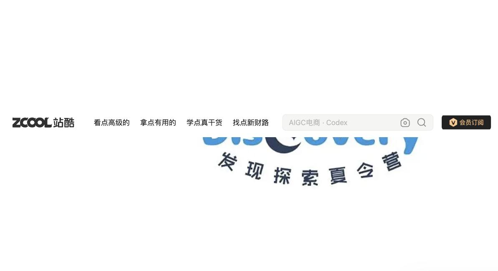
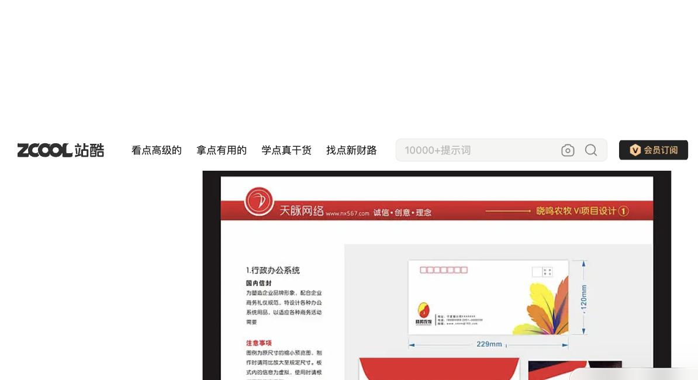
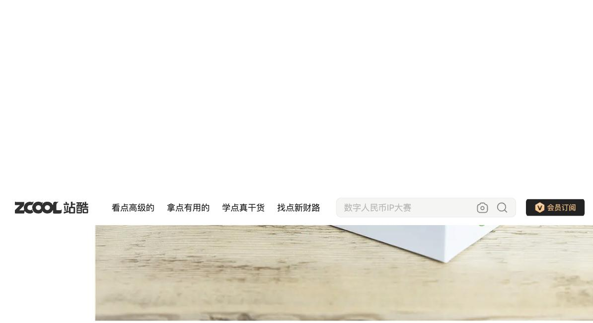
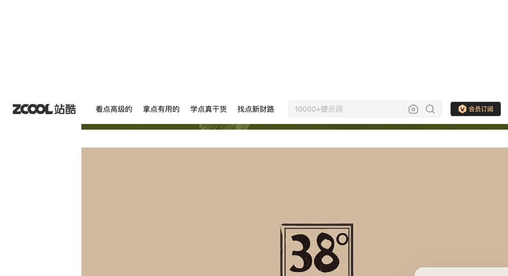
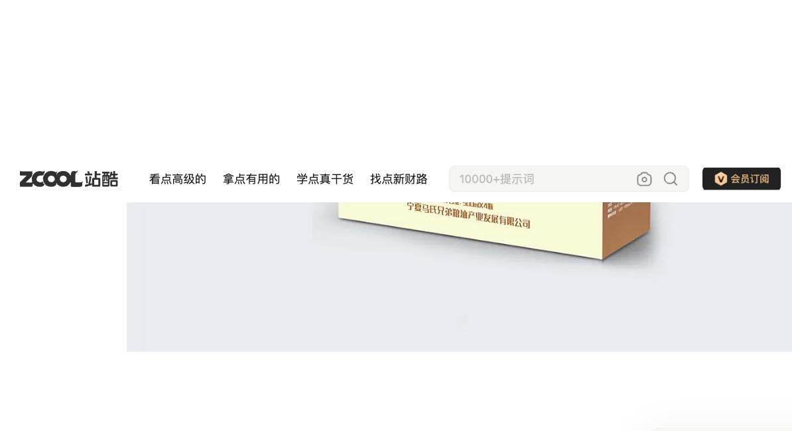
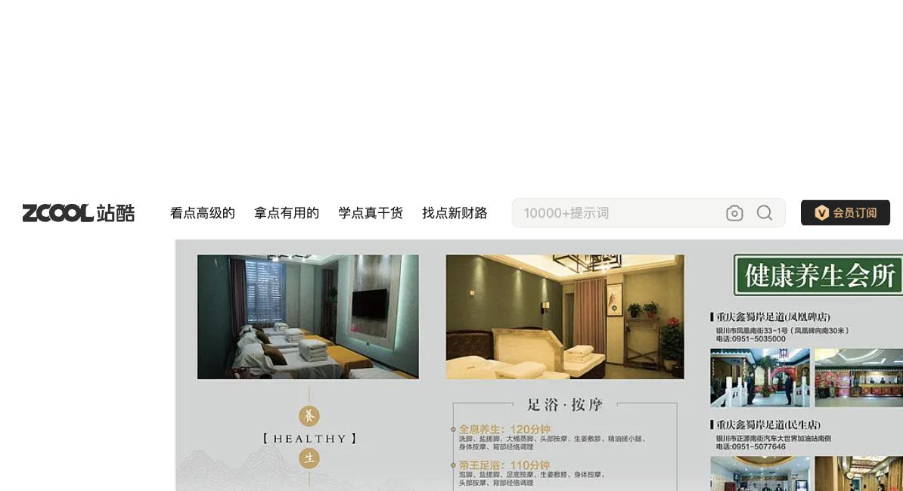

Product grid
ul_01
Regional Brand & Packaging Design · Yinchuan, Ningxia · ZCOOL
独角狮设计
Unicorn Lion Design — zcool.com.cn/u/ZNzEyMzA4MDA=
A range-driven regional studio: restrained per-piece palettes, earth-toned authenticity for Ningxia food/agri clients, and a full register shift — photography, illustration, or clean corporate — depending on what the category calls for.
1 Visual DNA
Regional authenticityRestrained paletteCategory-driven register
Production-readyNingxia identity
Read before the sections below: with 8 sampled works spanning packaging, a
brand logo, a VI manual, and a brochure, this portfolio does not show one
repeated graphic symbol the way 造物起异's does. That absence is itself a real finding — this
studio's signature is range and competency, not a single visual device. See
§8 for exactly what confidence levels this evidence supports.
2 Portfolio Evidence
8 sampled cover images, acquired 2026-08-22 via anonymous browser session (no login, no WAF evasion).








3 Color Language
No single dominant hue repeats across clients — each piece is fully client/category-driven. What does repeat: a restrained 2–3-color discipline within any one piece, and earth tones specifically for the regional food/agri client set. Swatches are approximate visual reads, not claimed production colors.
ul_05 tan/khaki
ul_08 wellness green
ul_02 Discovery blue
ul_06 pastel gradient
ul_07 kraft brown
4 Typography
Icon-integrated logotype
Discovery wordmark fuses a crescent-moon/star icon directly into the "o" letterform.
ul_02
Numeral as graphic anchor weak signal
A bold numeral in a bordered box ("38°") functions as the primary graphic device — observed once, not yet a stable rule.
ul_05 only
5 Composition
Generated diagram — register range across the 8 works, not a source image
Centered logo
ul_02
ul_02
Technical manual grid
ul_03
ul_03
Single front-facing pack
ul_05
ul_05
Bottle-family row
ul_06
ul_06
Tri-fold panels
ul_08
ul_08
6 Shape & Graphic Language
No consistent geometric tendency holds across all 8 works — each client's mark (e.g. ul_03's rooster/phoenix bird logo) is the client's own identity, not a repeated studio device. This absence is recorded honestly rather than forced into a false pattern.
7 Imagery / Illustration
ul_01 is real product photography; ul_06 is flat fashion-editorial illustration; ul_03, 05, 07, 08 read as flat graphic/print design. This studio moves across photography, illustration, and flat graphic design depending on the deliverable type — a range finding, not a single default mode.
8 Signature Elements
Restrained palette MEDIUM-HIGH
2–3 dominant colors per piece regardless of category.
ul_02,03,05,07,08 (5)
Earth-tone regional register MEDIUM
Tan/khaki/olive/brown, paper-craft texture, for Ningxia food-agri clients.
ul_04,05,07 (3, 1 partial)
Full register-shift methodology HIGH (methodology)
Photography, illustration, or clean corporate — matched to category, not defaulted.
all 8
Production-ready VI documentation LOW
Explicit dimension callouts, structured manual grid.
ul_03 only
Ink-brush/mountain accenting LOW
Traditional decorative linework in wellness context.
ul_08 only
9 Do / Don't
Do
- Keep any single deliverable to 2–3 colors
- Lean into earth tones/paper-craft texture for regional food-agri briefs
- Match rendering mode to category, not one default
- Expect strong technical polish in VI/collateral
Don't
- Assume a repeated graphic symbol or mascot — none found
- Assume one fixed color family for the whole studio
- Assume illustration is the default — more than half the sample is photography or flat graphic design
- Over-claim the numeral-icon (§4) or ink-brush accent (§6) as stable rules — both single-work
10 Agent Design Guide
For a downstream generation agent
- Identify the client category first — this studio's whole approach follows from it, not from a fixed house style.
- Keep any single deliverable's palette to 2–3 colors.
- For regional food/agriculture briefs, default to earth tones and a paper-craft/kraft surface look.
- Choose rendering mode deliberately: photography for food-realism briefs, illustration for fashion-forward premium goods, clean flat graphic design for corporate/VI work.
- Do not invent a "signature symbol" for this studio — none was found across 8 sampled works; build the identity from the client's own mark instead.
11 Evidence / Confidence
| Element | Work IDs | Confidence |
|---|---|---|
| Restrained palette | ul_02,03,05,07,08 | MEDIUM-HIGH (5) |
| Earth-tone regional register | ul_04,05,07 | MEDIUM (3, 1 partial) |
| Register-shift methodology | all 8 | HIGH (methodology) |
| Production-ready VI docs | ul_03 | LOW (1) |
| Ink-brush accenting | ul_08 | LOW (1) |
Full evidence: PERSONAL_DESIGN_SYSTEM.md.